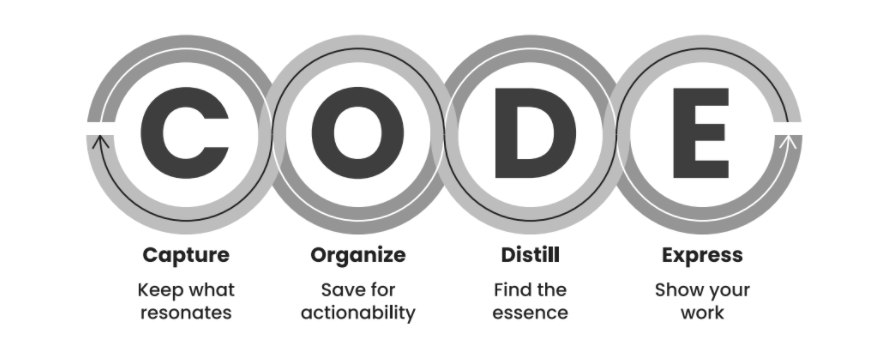

Capture
- We are generally inundated with information.
- Need to make a habit of finding what’s worthy in the cacophony.
Organize
- Avoid organizing methods that are overly rigid and prescriptive.
- Organize for action - according to your active projects.
Distill
- Every note is a seed of an idea, and every idea has an essence.
- Distilling notes helps to find said essence.
Express
- Information turns into knowledge only when you apply it.
